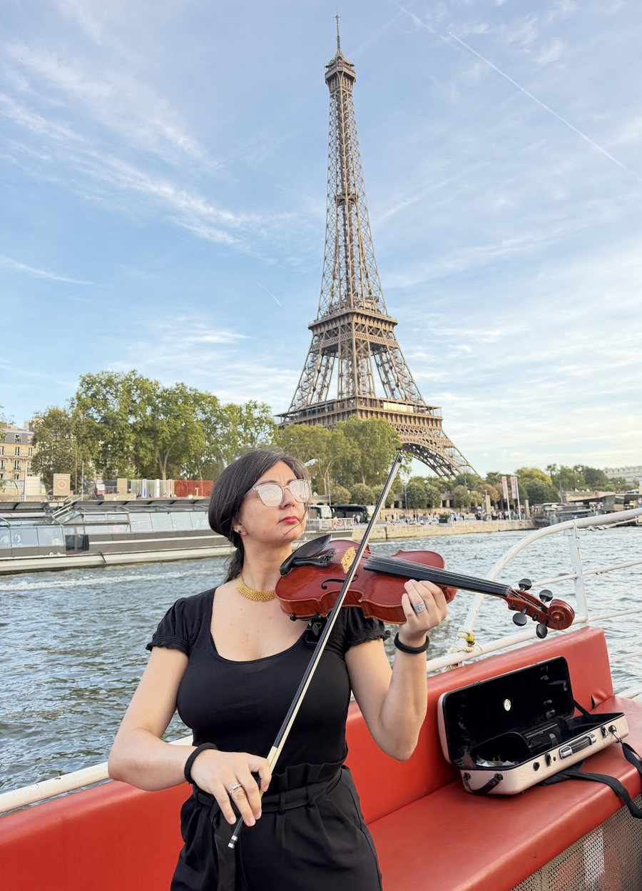

Eventos
Violín y voz lírica para matrimonios, celebraciones privadas y eventos corporativos, en París y más allá.
Formación clásica en violín y canto lírico, con un repertorio que va de la ópera y el barroco a la bossa nova, canciones latinas y pop arreglado para cuerdas.
Cada presentación se adapta a su momento: una ceremonia, un cóctel, una cena o una sola canción guardada como sorpresa. Canciones en español, francés, italiano, portugués e inglés.

Voz
Canto lírico, de arias a canciones queridas por todos.
Violín
Solo o con acompañamiento, clásicos y versiones pop.
Formatos a medida
Dúos, veladas temáticas, música entrelazada con relatos.